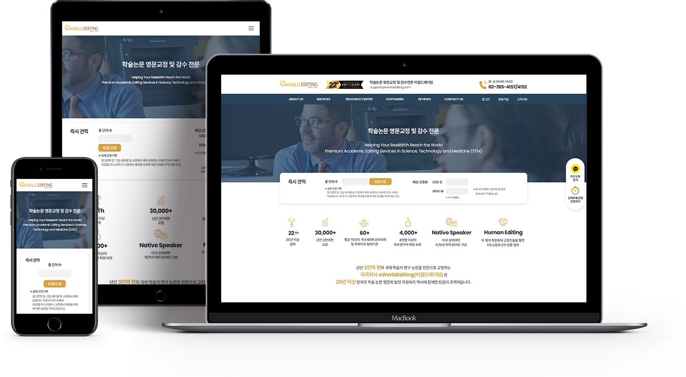

Year. 2024. 12
이월드 에디팅은 20년 업력의 영문교정 전문업체입니다. 업체의 업력이 오래되어 대학교,
연구소 등 이미 단골 고객들을 보유하고있어서 신규 유입을 받지 않아도 크게 문제되지 않았지만,
홈페이지가 리뉴얼한지 오래되어 디자인이 너무 정적이다는 고객들의 조언을 받아서
업체측에서 일단 메인화면만 스타일 변화를 주고 싶다고 요청이 왔습니다.
고객후기를 강조하여 'new'표시를 나타내어 현재도 계속 관리되고 있는 느낌을 주고 싶다고 합니다.
디자인 100% + 퍼블리싱 100% + 그누보드
즉시견적은 버튼을 클릭해야 문의를 할 수 있게 되어있기 때문에 번거로운 느낌을 줍니다.
고객후기란 요소 크기가 하단에 너무 작게 배치되어있어 운영이 멈춰있는 듯한 느낌을 줍니다.
메인화면에 업체의 근무시간과 전화번호, 이메일 확인이 어려워서 고객들에게 불편함을 줍니다.
홈페이지 최상단에 근무시간과 전화번호, 이메일을 바로 확인할 수 있게 했습니다.
즉시견적을 페이지에 바로 노출해서 견적정보를 입력할 수 있게 접근성을 높였습니다.
고객후기를 슬라이더 형식으로 만들어서 동적인 움직임을 주었고 'new'표시를 하여 계속 관리되는 느낌을 주었습니다.
교정 서비스에 대한 부분을 메인페이지에 더 자세히 소개하여 신규 유입에 도움이 될 수 있도록 만들었습니다.
신뢰감을 줄 수 있는 진청색 컬러와 기존 포인트 컬러인 노란색을 적절히 사용하였습니다.
업체로부터 기획, 구성요소, 디자인 등 매우 만족스러운 평가를 받았습니다.